Exercice 3, Figures géométriques
Contents
3.1) Carré
y = [0 0 1 1]; x = [0 1 1 0]; square = polyshape(x,y); plot(square);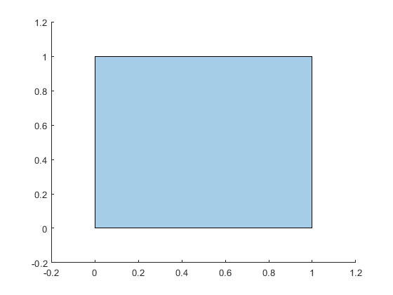
3.2) Polygone régulier à n côtés
On remarque que l'ensemble S des solutions complexes de la racine de l'unité (i.e. 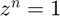) donne exactement n points répartis uniformément sur le cercle trigonométrique, i.e. l'argument du k-eme élément de S s'exprime commme 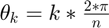 pour k = 0..n-1. On peut donc obtenir un polygone régulier à n côtés simplement en les reliants et en ajoutant un point pour 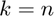 pour fermer le polygone.
polygon(3);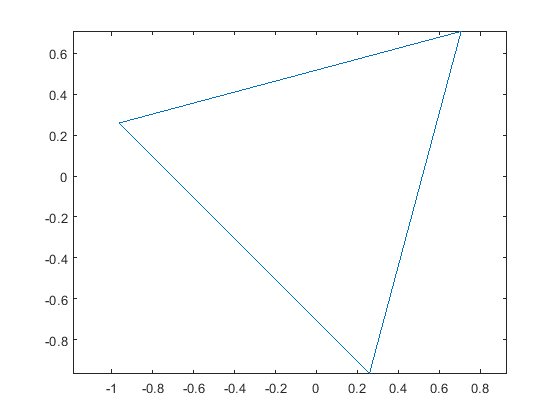
polygon(4);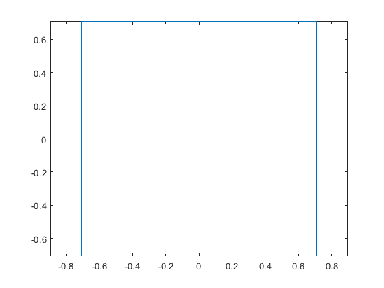
polygon(5);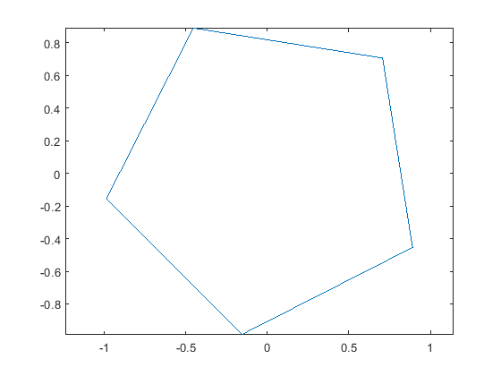
polygon(12);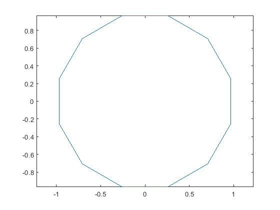
Le résultat est légèrement décalé sur le côté mais on a bien un polygone régulier à n côtés pour tout n.
3.3) Carré penché
polygone(4, pi/6, 1);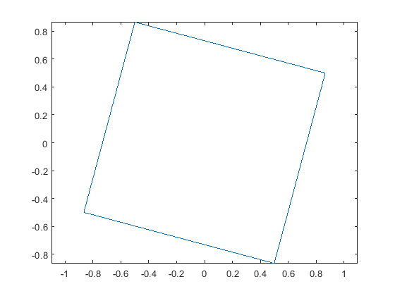
polygone(4, (pi/6 + 2*pi), 1);
Comme on peut le voir la rotation avec 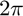 en plus donne bien le même résultat.
3.4) Pentagramme
Un pentagramme est juste un pentagone où au lieu de relier chaque 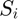 à la suite (voir 3.2 pour la définition de S), on a, à la place, relié les 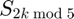 i.e. 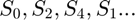
polygone(5, pi/12, 2); % rotation de pi/12 ajouté pour ré-équilibrer figure
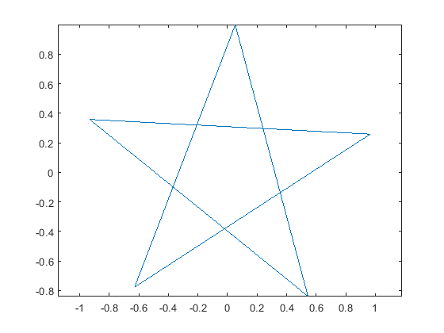 3.5) Cercle
Un cercle (de rayon 1) est le graphe de la courbe paramétrée 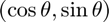 pour 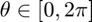. i.e. On doit juste créer un polygone "assez" de points pour donner l'illusion que ce polygone à "assez de points" est un cercle.
polygone(2000, 0, 1);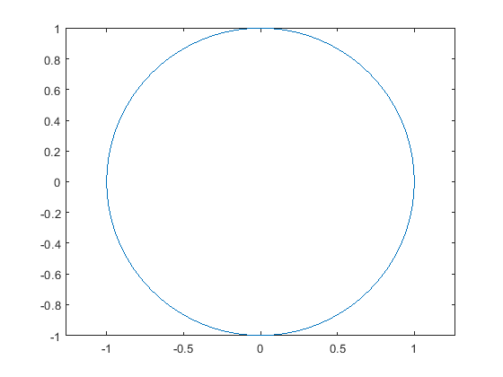
-- Fonctions --
1;
function polygon(vertex_nb) % Sûrcharge de polygone pour phi=pi/4 i.e. pour le "ré-équilibrer", % i.e. donner l'impression qu'on ait pas appliqué de rotation % polygone(vertex_nb, pi/4, 1); end function polygone(vertex_nb, phi, k) % Dessine un polygone régulier à vertex_nb côtés avec un saut de k % et le tourne de phi degrés. (saut i.e. saut dans le reliage des % points) % thetas = [0+phi:k*2*pi/vertex_nb:k*2*pi+phi]; x = cos(thetas); y=sin(thetas); plot(x, y), axis equal; end